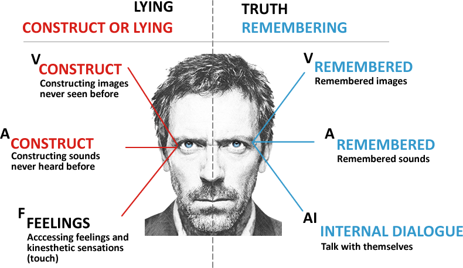

A summary of the book with just the important things.
We are always transmitting a message, no matter how much we are not aware of it. Body posture and non-verbal language are 90% of the communication. Physical posture affects us psychologically and vice versa. For example, if you stand for a long time, it makes you angry, just as if you get irritated, consequently, your expression will reflect this, with your jaw cracked and brows furrowed.
Empathy
Empathy is everything capable of creating harmony and a good relationship with people, based on trust, cooperation, consent, and most importantly: being open to the ideas of others.
We need to examine the person and adapt the way we communicate with them. People like people who are similar to them. The main advantages that empathy provides is to make people like you and create a strong bond of trust
Alignment and Mirroring
Consists of observing the person with whom you want to develop empathy and copy your posture (must be subtle and gradual). You can consider the voice, timbre, tone, intensity, breathing, rhythm, body posture, and so on. These tips extend to written language as well. We should always find something in common with our interlocutor, even if it is a similar hobby. Use a common sense to know the limit of adapting behavior, as we can never imitate a disability or an accent.
In a discussion, you should first agree and then express your opinion (avoid the “but” word). Start by rejecting the other person’s idea does not create empathy and connection.
When you are talking, your words should be aligned with your body expression. It’s contradictory if you scream and ask for calm.
Our body tends to mirror others. If someone is laughing, you will laugh too (like background laugh in TV shows)
Remember, our body is a mirror of our mind.
Emotions
An emotion is a psychological state (automatic) that involves three distinct components: a subjective experience (see something), a physiological response (increase in heart rate), and a behavioral or expressive response. Strong emotions are even capable of distorting our view of the world
Emotion is a feeling that is transmitted by everyone and, in most cases, is disseminated by facial expressions. Every time we express a feeling, it is represented by the muscles in our face.
7 universal emotions: Surprise, Sadness, Anger, Fear, Disgust, Contempt and Joy
Lies Detector
Most people lie all the time, whether for silly things or even the most complex ones
In order to detect whether the person is lying, we have to observe whether their signs are consistent with their speeches
Some of the main attitudes or signs of when the person is lying, which are: scratch the nose, they cannot keep an eye on the eye; very sweaty hands, unexpected changes in tone of voice, speeches, and language.
It’s important understanding the person and his actions, and suggests always acting with caution, in order to let the person explain himself if you suspect something.
Eye Accessing Cues
Eye Accessing Cues in NLP relates to the various eye movements in certain directions that indicate whether an individual has primarily visual, auditory or kinaesthetic thinking.

Changing my mind
Our mind transform what you listen into thoughts. The subconscious does not filter or analyze words, and you need to think everything you listen. Words can be turned into suggestions that can be turned into opinions.
Do not think in a dog
You likely thought in a dog. Negative words are an abstraction. You need to think about the phase and then negate it. Suggestions are part of hypnosis study. I feel like throwing up, don’t you? (this is an example of suggestion)
The receptor of a message fills missing information of a message. It’s common to see marketing exploring this with slogans using words like best, greater, improved, always, everybody, etc. (better than what?)
Anchors
That one can act in certain ways to trigger desired emotional states in another person. You can say something to anchor some emotion everytime you see that emotion. (say well done eveytime the other person is happy)